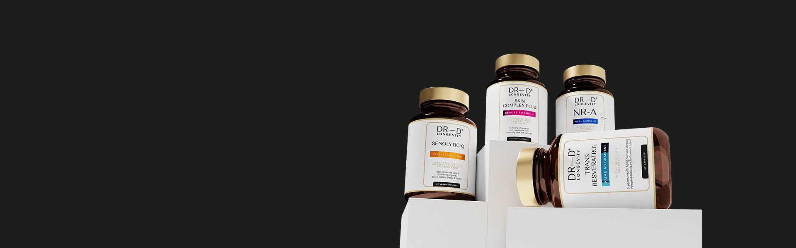
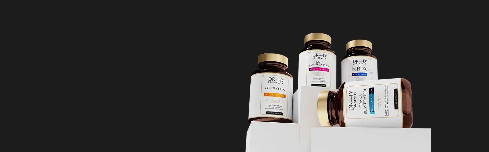
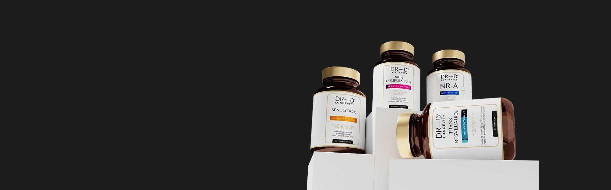

Протокол #1 в грижата за дълголетие и здравословно стареене
Клетъчно здраве, антиоксидантна защита и дълбоко подхранване отвътре-навън

Клетъчно здраве, антиоксидантна защита и дълбоко подхранване отвътре-навън


Интензивно хидратира и освежава кожата
Удължава жизнеността на тъканите и органите
Събужда пълния потенциал на тялото

Единствен по рода си NAD+ бустер

Помага на тялото да изчисти старите клетки, освобождава място за нови и здрави
Силен антиоксидант, който защитава клетките от увреждане и ги поддържа млади

Дълбока грижа отвътре навън за свежа, сияйна и здрава кожа
До 60% повече клетъчна енергия
(след 3-6 седмици)
Видимо по-гладка и хидратирана кожа
(след 2-4 седмици)
Подобрен фокус и памет
(след 4-6 седмици)
По-добро възстановяване и издръжливост
*Потребителски резултати от комбиниран прием на антиейдж протокола.
Откакто приемам Skin Complex, кожата ми се чувства много по-хидратирана и гладка. Тенът ми е по-равномерен.
Анита Спасова
Като дългогодишен клиент на д-р Денкова, знам, че всички нейни продукти са с най-високо качество. Trans Resveratrol с Apigenin безспорно е един от най-добрите продукти на пазара.
Елена Петрова
Този продукт ме накара да се чувствам много по-млад и енергичен! Лекото неудобство от приемането на две капсули на ден бързо се забравя, когато видиш реалните ползи. Вече го препоръчах на приятелите си!
Николай Стоянов
Видима разлика в кожата ми само след няколко седмици!
Мария Василева

Клинично доказани формули
100% натурални съставки
Гарантирано качество от д-р Денкова
Подкрепено от науката за дълголетие
*ПРИЕМ: 2 капсули от всеки продукт, 30 мин. преди хранене
NR-A
Отключи скритите мощности на тялото си
Увеличава NAD+ нивата - Забавя процесите на стареене като повишава и запазва нивата на антиейдж молекулата NAD+.
Насърчава клетъчното подмладяване и възстановяване - Защитава клетъчното ДНК от изменения и мутации.
Защитава сърцето и мозъка - Подкрепя когнитивната функция и настроението и поддържа оптималното здраве на мозъка.
Засилва метаболизма и физическата издръжливост - Подобрява енергийния метаболизъм и инсулиновата чувствителност, което значително намалява умората.
Научна революция в капсула
Как работи
Съставки
Senolytic-Q
Рестартирай тялото на клетъчно ниво
Елиминира старите клетки - освобождава място за нови и здрави
Ускорява клетъчното обновяване - стимулира автофагията и регенерацията
Мощен антиоксидантен щит - защитава от свободните радикали
Подкрепя здравето на ставите, сърцето и мозъка - за по-активен и пълноценен живот
Двупосочно антиейдж действие и клетъчно пречистване
Как работи
Съставки
Trans Resveratrol
Активирай дълголетието
Активира гените на дълголетието (SIRT1) - стимулира регенерацията и поддържа младостта
Мощен антиоксидантен ефект - неутрализира свободните радикали и предпазва клетките
Поддържа сърцето и кръвоносните съдове - регулира кръвното налягане и холестерола
Защитава мозъчната функция - подпомага когнитивното здраве и намалява риска от невродегенеративни заболявания
Засилва енергийния баланс - повече енергия, издръжливост и жизненост
Активатор на дълголетието
Как работи
Микроскопична армия от 1000 мг 99% чист транс-ресвератрол
Skin Complex Plus
Съживи блясъка на кожата си
Интензивна хидратация и еластичност - хиалуроновата киселина задържа влагата и придава плътност –
Регенерация и защита от стареене - спермидинът стимулира обновяването на клетките и синтеза на колаген
Антиоксидантна защита - коензим Q10 и витамин C защитават кожата от оксидативен стрес
Равномерен тен и блясък - екстрактът от гроздови семена и витамин B3 изравняват пигментацията
По-гладка, стегната и младежка кожа - активните съставки подхранват, възстановяват и укрепват кожната бариера
Дълбоко подхрaнване за сияйна кожа
Как работи
Съставки
Всеобхватна грижа,
с която спестяваш.
В комбинация четирите формули работят още по-добре. Всяка допълва действието на останалите за всеобхватно стимулиране на клетъчното здраве, тонус и подмладяване.
NR-A зарежда клетките с NAD+ – ключовият коензим за енергия и възстановяване.
Senolytic-Q премахва старите, нефункционални клетки и стимулира регенерацията.
Trans Resveratrol защитава здравите с мощен антиоксидантен ефект, активирайки гените на дълголетието.
Skin Complex Plus подхранва кожата отвътре, като засилва колагеновия синтез и дарява сияен вид.